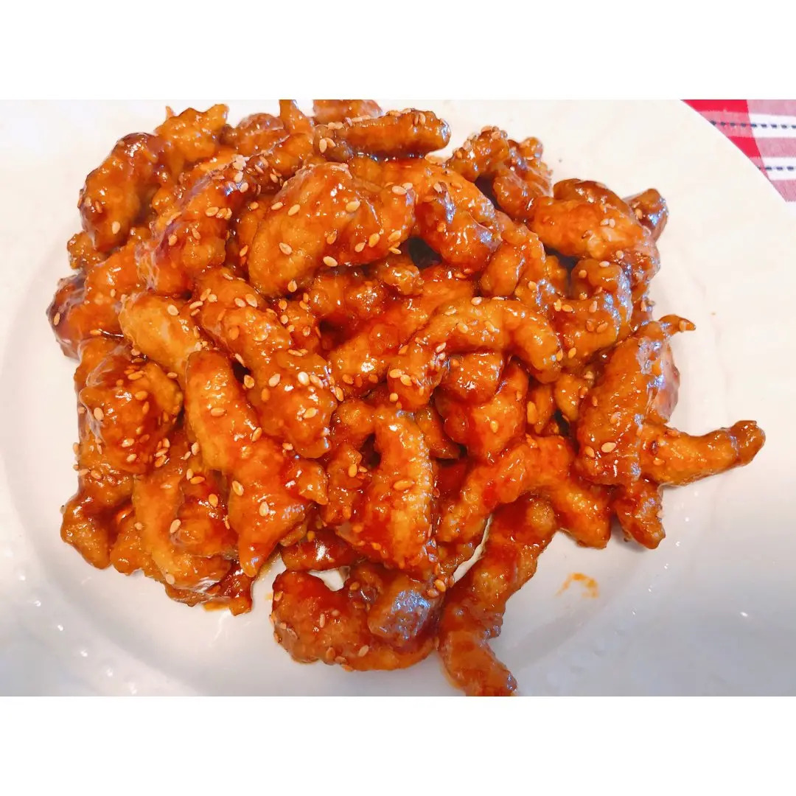

Recipe Detail
Recipe Detail
Sweet&Sour Pork

Required ingredients
List of ingredients
- 300g Pork tenderloin, thinly sliced
- 1 Egg, beaten
- 1/4 cup Cornstarch
- 1/3 cup Pineapple chunks
- 1/3 cup Bell peppers (red, green, or yellow), diced
- 1/3 cup Onion, diced
- 3 tbsp Ketchup
- 2 tbsp Vinegar
Other
-
- Difficulty level: medium
- Required time: 20min
Steps
- Marinate the pork tenderloin slices with salt and set aside for 10 minutes.
- Dip each slice of marinated pork into the beaten egg, then coat thoroughly with cornstarch.
- Heat oil in a frying pan or wok over medium-high heat. Once hot, fry the pork slices until golden brown and crispy. Remove and drain on paper towels.
- In the same pan, reduce to medium heat and sauté onions and bell peppers until slightly tender.
- Add pineapple chunks and stir briefly.
- Combine ketchup, vinegar, sugar, and soy sauce in a bowl. Mix well and pour into the pan.
- Bring the sauce to a simmer and then add the fried pork slices. Toss well to ensure each piece is coated with the sauce.
- Cook for another 2-3 minutes until everything is heated through and well combined.
- Transfer to a serving plate and serve immediately with steamed rice or noodles.